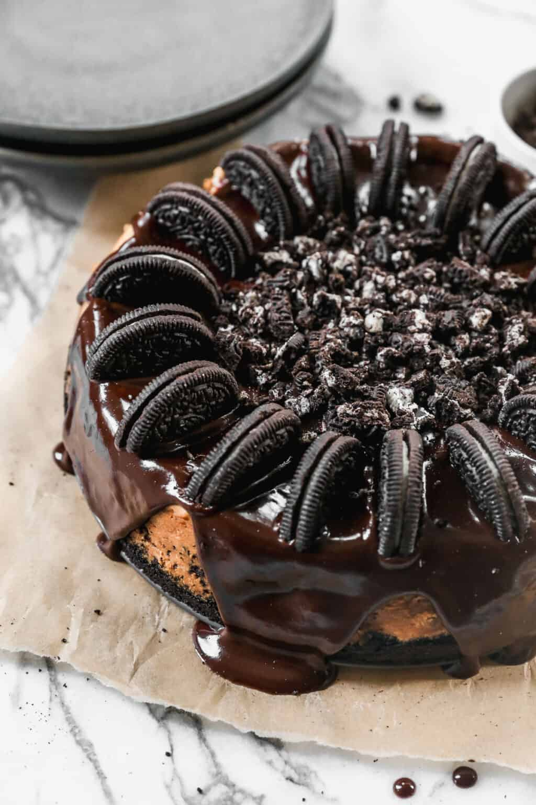

Oreo Cheesecake

Ingredients
This simple Oreo Cheesecake recipe has a five ingredient cheesecake filling, and a chocolate ganache topping. It's perfect for a special occasion, but easy enough for a beginner!
- 30 Oreo cookies
- 5 Tablespoons butter , melted
- 3 8 oz packages cream cheese , softened*
- 4 large eggs
- 2 teaspoon vanilla extract
- 1 cup granulated sugar
- 25 Oreo cookies , broken into chunks
- 1/2 cup semi-sweet chocolate chips
- 4 Tablespoons butter
- 1/4 cup heavy whipping cream
- 1/2 teaspoon vanilla extract
- 1 Tablespoon powdered sugar
Steps
- Oreo Crust: Add whole Oreo cookies to a food processor and pulse until very fine crumbs. Stir in the melted butter. Pour mixture into a 9-inch springform pan. Use the back of a measuring spoon to press it firmly into the bottom and half way up the sides of the pan. Refrigerate while you make the cheesecake filling.
- Preheat oven to 325°F.
- Add the softened cream cheese to a large bowl or stand mixer and beat with your stand mixer or electric mixers until smooth and fluffy. Make sure there are no clumps of cream cheese, and it's very smooth. Add eggs, 1 at a time, beating after each addition. Add vanilla and sugar and mix well, scraping down the sides of the bowl.
- Fold in the Oreo chunks. Pour batter into prepared oreo crust.
- Bake for 60-70 minutes, or until the edges are set and the center is not jiggly, but still a little soft. Remove from oven and cool completely.
- Ganache: Once the cheesecake has cooled, make the ganache. Combine the butter and cream in a saucepan over medium heat until the butter is melted and the mixture is simmering. Place the chocolate in a small bowl. Pour the hot cream mixture over the chocolate and stir until melted and smooth. Add the vanilla and powdered sugar and stir well.
- Pour the ganache over the cooled cheesecake, carefully smoothing to cover the top evenly (you may not use it all, or you can drip some down the sides of the cake if you'd like). Refrigerate for at least one or more hours before serving.